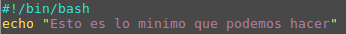
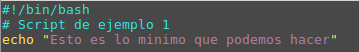

Por norma general todos los sistemas Linux suelen incluir el editor vim ( o el vi en su defecto ) con el que podemos editar archivos de texto desde el terminal del sistema.
Nombre
Un archivo de script en shell puede tener cualquier nombre, pero cuidado, no le pongas nombres de comandos del sistema. La extensión del archivo podría ser cualquiera, se le pone .sh para distinguirlo de otros tipos de archivos.
Estructura mínima
Todos los archivos en shell bash deben comenzar indicando donde se ubica el interprete de comandos, es decir, el programa que sabe que significado tiene cada comando. A continuación se ubica la lista de comandos a ejecutar.
El mínimo script que podríamos escribir es el siguiente:

Permisos
Al archivo hay que darle permisos de ejecución, que por defecto no se asignan al crear el archivo. [ Estos permisos pueden asignarse con el comando chmod]
Comentarios
Todo lenguaje de programación permite escribir comentarios que son líneas de texto para aclarar el código fuente. Los comentarios en Bash se indican con el símbolo #. Por ejemplo, para el script anterior podríamos escribir el siguiente comentario:

Invocación
Cuando se ejecuta un comando se dice que se está invocando el comando. Los comandos del sistema son archivos ejecutables ubicados en sitios específicos del sistema y se pueden invocar desde cualquier posición del árbol de directorios, mediante la línea de comando. En cambio, un archivo de script propio, que esta en una ubicación desconocida para el sistema se debe invocar indicando la ruta para llegar a él desde la ubicación en la que estamos. Lo usual es posicionarnos dentro del directorio que contiene el script y teclear:
./nombreScript.sh
El punto barra indica que busque el archivo ejecutable dentro del mismo directorio en el que nos encontramos.